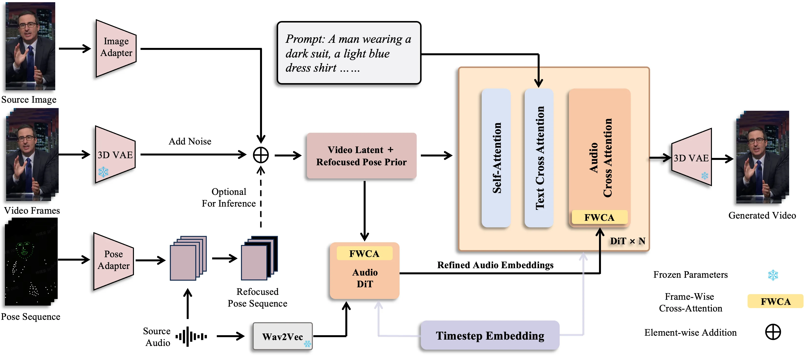

Standing speaker
Natural co-speech gestures
Rhythm-aware upper-body motion without an explicit pose sequence.
Expressive Audio-Driven Avatar Generation via Refocused Audio-Pose Priors
00 / Highlights
ApoAvatar couples prosody with full-body motion, producing gestures that rise and settle with the speaker’s rhythm while preserving lip sync and identity.
01 / General results
From close-up speech to standing presentations, ApoAvatar maintains visual fidelity while adapting gesture dynamics to the audio.
Rhythm-aware upper-body motion without an explicit pose sequence.
Clear articulation and coherent head motion under conversational speech.
A plausible speaker can be synthesized even when no reference image is provided.
02 / Comparisons
Side-by-side results highlight expressive hand motion, clearer structure, and more stable identity than representative baselines.
Our result remains natural and articulated while competing methods exhibit blurry hands or implausible poses.
ApoAvatar avoids the static or blurry gesture patterns visible in the compared generations.
Same image and audio, compared across five representative systems.
Comparison on a different speaker, appearance, and speaking style.
03 / Flexible inference
Use ApoAvatar pose-free for audio-driven gestures, add an external pose for direct control, or route separate voices in a multi-person dialogue.
The same network supports direct pose conditioning and expressive pose-free inference.
Per-person audio routing drives independent gestures in a shared scene.
04 / Method
ApoAvatar is a diffusion-based framework with two complementary mechanisms for learning expressive, temporally aligned avatar motion.

Training-time prior
Speech energy controls how much pose supervision is retained at each frame. Strong accents keep pose cues; quiet segments suppress them. The model therefore distills an implicit rhythm-to-motion prior instead of depending on pose at inference.
Per-frame interaction
An Audio DiT adapter refines audio with the current visual and pose-aware context. The refined audio is then injected back into the matching video frame, strengthening short-term alignment and motion coherence.
Ablations
Refocusing prevents pose supervision from overwhelming audio dynamics, while the frame-wise interaction module improves expressive movement within local time windows.
05 / Paper
Lip sync has improved. Speech-driven body motion still lags behind.
We present ApoAvatar, a diffusion-based framework that ties speaking style to motion dynamics. Our Audio-Pose Prior Refocusing mechanism uses speech energy to gate pose supervision during training: prosodically intense segments retain stronger pose guidance, while quiet segments suppress it. This distills an implicit rhythm-to-motion prior into the model, enabling expressive gestures at inference without explicit pose input.
We also introduce a frame-wise audio-video interaction module that updates audio features using the current visual context and refocused pose prior through bidirectional cross-attention. The framework supports both pose-controlled and pose-free inference. Experiments on EMTD and HDTF show gains in lip-audio synchronization, gesture expressiveness, and overall motion naturalness.